现代分组密码设计思想：
分组密码是一个{0,1}的随机代换
基本的变换手段为：代换与置换
基本的安全需求：混乱（密钥和明文以及密文之间的依赖关系复杂）、扩散（单个密钥位或明文位的影响尽可能扩散到更多的密文位，即修改明文的某一位需要尽可能导致密文的尽可能多位发生改变）
结构 - SPN网络和Feistel结构
迭代密码：将明文经过加密函数G迭代加密多次（需要密钥参与，密钥由密钥扩展算法生成，每一次加密的密钥都不相同）。多次加密能够使得比特位得到扩散，增加了密码的安全性。
**SPN网络——代换-置换网络的一轮变换过程：**明文X的一轮加密包含：代换S和置换P。首先与轮密钥异或（白化），然后首先进行小代换，然后将几组的代换结果经过置换后输出。解密首先反置换再反代换即可。如输入为16比特，则代换过程则是将这16比特分为4组，每组均进行代换操作（这些代换需要借助代换表完成）置换则是将代换后的16比特打乱重排后输出。不过 由于对于任意的线性变换A:x→y=A(x)，有A(xk)=A(x)A(k)，因此存在有不同的解密顺序也能够解密出正确结果。
Feistel结构的一轮变换过程：将输入分为两份，每一轮运算只运算了一半的输入，交替加密。流密钥函数K与一半不变的输入输入到函数F中，将得到的输出与另一半输入异或后输出。其加密与解密过程完全相同，不同的是解密密钥首先输入Kn到K0，加密密钥为K0到Kn，即逆序使用。非线性函数F不需要可逆。 Feistel的扩散速度比SPN网络慢，因此需要更多的迭代次数
SPN 密码体制定义
设l,m,Nr是正整数，P=C={0,1}lm
是由初始密钥k用密钥编排算法生成的所有可能的密钥编排方案集合，一个密钥编排方案记为(k1, k2, …, kNr+1)
状态值w长度为l×m，记为w1, w2, …, wNr+1
w可以看成m个长度为l的子串连接而成，记为w<1>，w<2>，…，w<m>，其中
w<i>=w(i-1)l+1,w(i-1)l+2,…,w(i-1)l+l
- SPN的特点：结构简单，易于软硬件实现；高效快速，易于扩展和强化——增加l和m可以提高穷举k的难度（但过大可能会占用过多存储资源），也可以使用多个S盒和P盒进一步提高变换的复杂度，增加Nr可以进一步提高密文的混乱程度
线性密码分析
通过分析S盒的线性特性从而发现明文比特、密文比特和密钥比特之间可能存在的概率线性关系。存在一个比特子集使得其中元素的异或表现出非随机的分布来进行分析的密码分析方法。（已知明文攻击，给定明文、密文和S盒，确定k的部分比特）
S盒线性逼近
考虑一个S盒S:{0,1}m→{0,1}n，具有m重输入X=(x1,x2,…,xm)和n重输出Y=(y1,y2,…,yn)。从X和Y中任意选择若干比特通过异或运算构成一个随机变量
上面的结果很可能不为二分之一，就产生了特殊的概率。
如果选择的输入序列X对应的输出不是Y，则，否则等于
偏差
取值于{0,1}上的随机变量X，取值为0的概率为p，则取值为1的概率为1-p，X的偏差定义为：
堆积引理
设是取值于{0,1}上的独立随机变量，其偏差依次为，定义随机变量，以表示其偏差，则有
证明：当k=1时结论显然成立
假设k=n时上述结论成立，则当k=n+1时
证毕。
线性逼近表：
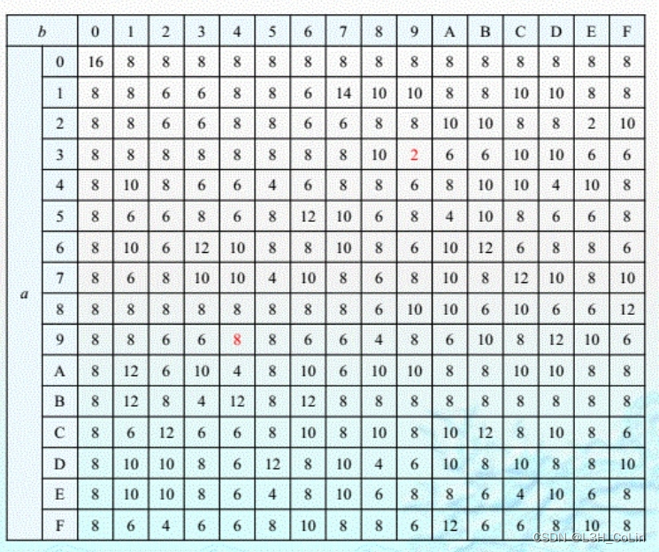
a表示输入的4比特，b表示输出的4比特，中间的数字表示满足的的个数（），容易通过此表获取偏差。选择其中距离8最大的部分可得偏差最大的输入输出对。理解：线性逼近表是S盒的性质，仅与S盒的置换有关。
线性逼近分析过程
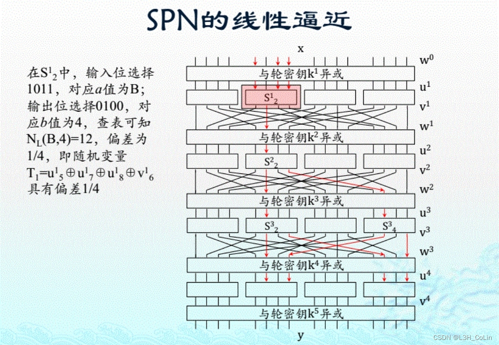
需要注意的是，线性分析只能攻击最后一个密钥，而不能攻击其他密钥，因此在分析过程中应将其他密钥视而不见，因为密钥是确定的，而偏差计算的是一种分布，与前面的密钥无关。输入和输出应尽量选择对应于线性逼近表中数值偏离8较多的，这样分析成功的概率更大。
对于第一轮S盒的输入，追踪其输出到最后并计算偏差
如上图中第一轮输入选B输出选4，则随机变量的偏差为
第二轮输入选4输出选5的偏差绝对值最大。即随机变量的偏差为
第三轮输入需要注意，第二轮输入的最低位跑到第4个盒去了，所以第三轮输入考虑两个盒，一个是，输入为4；一个是，输入为4，输出还是都选5。即偏差为；偏差为
由堆积引理可知的偏差为（四者并不独立，因此这不是准确值，只是估算，不过仍然有效），具有偏差（后面的k是固定不变的，因此不会计入偏差）
理解：这实际上是一个加密链的分析过程，上面的选择输入是由我们自由选择的，不是说输入就是这个，而是说我们选择哪些比特参与异或。
分析过程梳理：
- 收集尽可能多的在同一未知密钥k加密的T对明-密文对，用表示明-密文对的集合()，目标是获得候选子密钥(，即4组子密钥中的第2组和第4组)
- 每个候选子密钥分配一个计数器，初始值为0
- 对于每对明-密文对，尝试所有可能的候选子密钥，计算随机变量的结果，若结果为0则相应计数器加1
- 明-密文对尝试完毕后，真子密钥对应的计数值最接近，其他则接近（T越大结果越准确）
线性密码分析基于S盒的有效线性逼近
是一种已知明文攻击方法，需要较多的明-密文对
- 基于偏差的线性攻击要想获得成功，所需明密文对数量T接近，c为常数
此算法只能分析最后一轮子密钥，缩小的穷举密钥的范围。
差分密码分析
通过分析明文对的差值（异或）对密文对差值的影响来恢复某些密钥比特的分析方法。
一种选择明文攻击方法，构造若干明文串对，每对明文的异或相等，观察相应密文异或结果。
S盒差分特征
设是一个S盒，长为m的有序比特串对(x,x*)，称S盒输入异或为，输出异或为，(x’,y’)称为一对差分。
对于任意，定义集合为包含所有输入异或值为x’的有序对(x,x*)，该集合含有2m对，对集合中的每一对，可求出S盒的输出异或，一个非均匀的输出分布将会是一个成功差分分析的基础。
需要分析(x’, y’)的分布情况，其中x’是固定的。（注意每一个y’只会出现偶数次，因为x和x*互换后y和y*互换，然后y’相等）
扩散率： 条件概率称为差分(a,b)的扩散率
差分分析过程
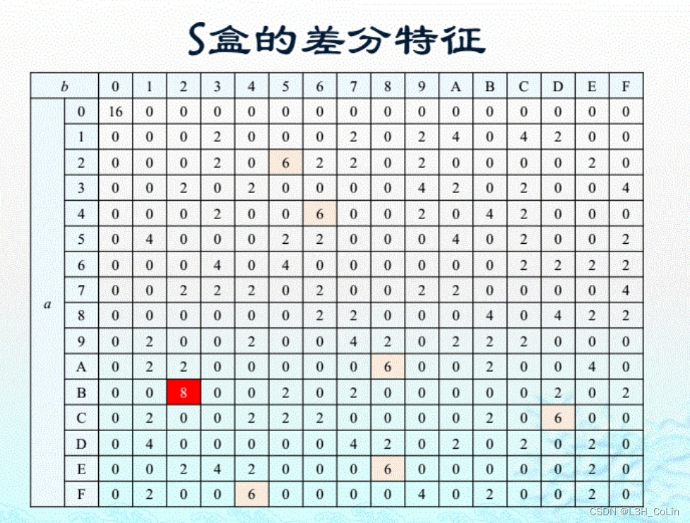
上图中a表示输入x，b表示y’。
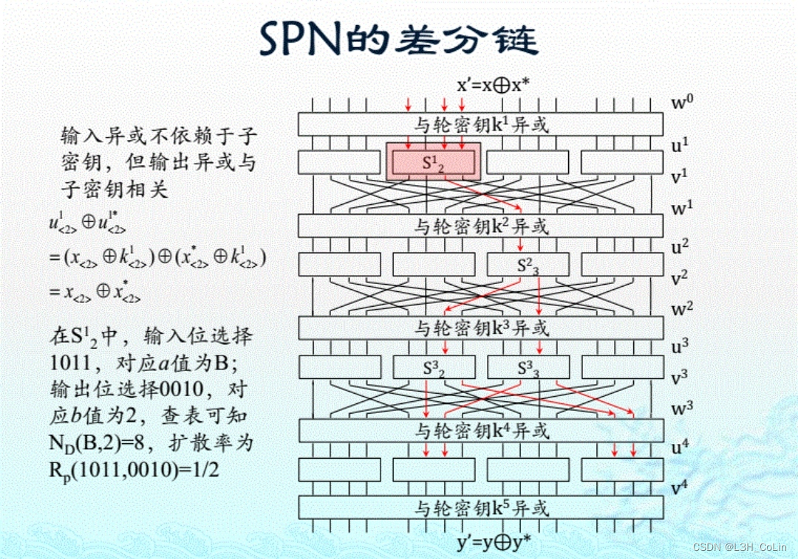
第一轮应该选择扩散率最大的进行分析，能够分析成功的概率最大。,扩散率为
第二轮追踪第一轮的输出，到了第三个子密钥中进行分析。输入选择4，输出选择6，扩散率为
接下来按照图中红线继续分析即可。的扩散率均为
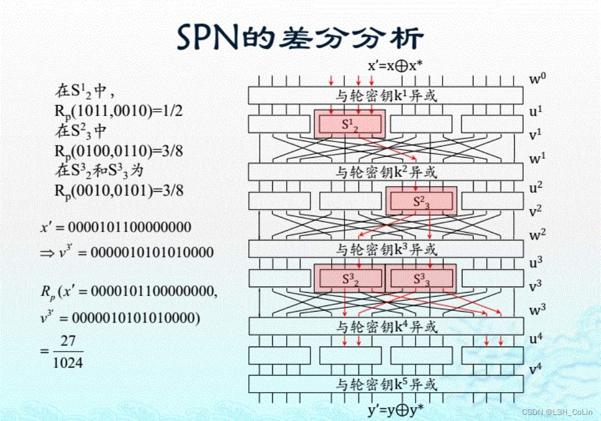
由图可知总的扩散率即为扩散率的乘积。
输入异或与子密钥无关，但输出有关
正确对：对于给定密钥，满足差分特征的明文对。对于所有明文输入，正确对产生的概率等于扩散率。
需要找到足够多的四元组（x,x*,y,y*），其中固定不变，和线性分析一样，只能分析最后一轮子密钥，对可能的候选子密钥进行猜测，正确对在正确的密钥作用下，满足差分链特征。
错误对：带来噪音
上例中测试最后一轮子密钥k5的8位，即穷举256个密钥。满足差分特征，则相应密钥的计数器加1
分析过程梳理：
- 收集尽可能多的在同一未知密钥k加密的T个4重组（x,x*,y,y*），x’=0000101100000000，用T表示四重组的集合(|T|=T)，目标是获得候选子密钥
- 每个候选子密钥分配一个计数器，初始值为0,
- 对每对明-密文，尝试所有可能的候选子密钥，计算出，如果则相应的计数器加1
- T对明-密文尝试完毕后，真子密钥对应的计数器值最大
- T越大，结果越准确
分析小结：
- 差分密码分析基于S盒不均匀的差分特征
- 差分密码分析是一种不确定的明文分析方法，需要较多的明-密文对
- 基于差分扩散率的差分攻击想要获得成功，所需明-密文对数量T接近（少于线性分析），c为某常数
- 此算法只能分析最后一轮子密钥，缩小了穷举密钥的范围
高级加密标准
DES
- 基于Feistel结构
- 明文、密文、密钥长度为64位
- 使用8个不同的非线性S盒
- 使用扩展代换和压缩置换
- 迭代16轮
- 加密和解密算法相同，只是密钥编排方式不同
算法结构
输入明文（64位），首先进行预先初始置换IP，然后使用Feistel结构和16个子密钥进行16轮迭代。之后进行逆置换IP-1后输出密文
初始置换
将64位分为8个字节来看，置换后也是8×8。置换后每一个字节的最后一位属于初始的第一个字节，倒数第二位属于初始的第二个字节，……以此类推，置换后的8字节中每个字节的最后一个字节分别对应初始第一个字节的第2、4、6、8、1、3、5、7个字节。这个置换固定不变。
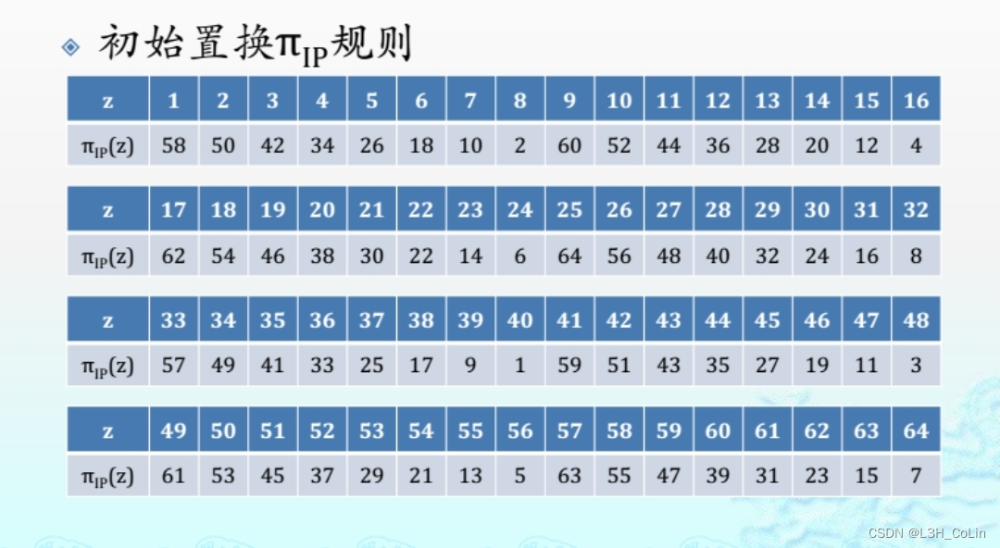
密钥编排过程
对于一个初始给定的密钥k，首先进行密钥置换丢掉8比特（这8比特实际上作为校验位存在），对左28位进行循环左移ai位，对右28位循环右移a2位，其中当i=1,2,9,16时，ai=1，其他时候ai=2。然后进行压缩置换再丢掉8比特，形成第一个轮密钥（48位）。
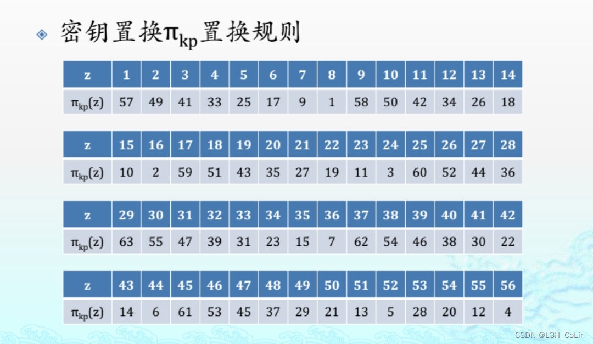
由上图可知，丢掉的是64位中每个字节的最后一位。
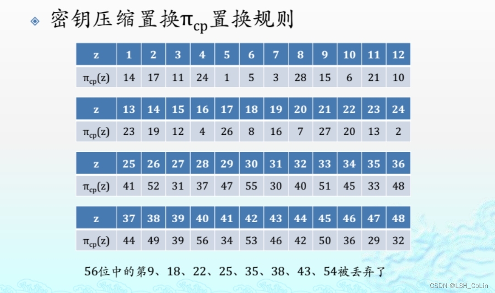
迭代过程
每一次迭代将输入的后32位与48位密钥进行函数处理得到32位与输入前32位异或得到输出的后32位，输出前32位即为输入后32位。
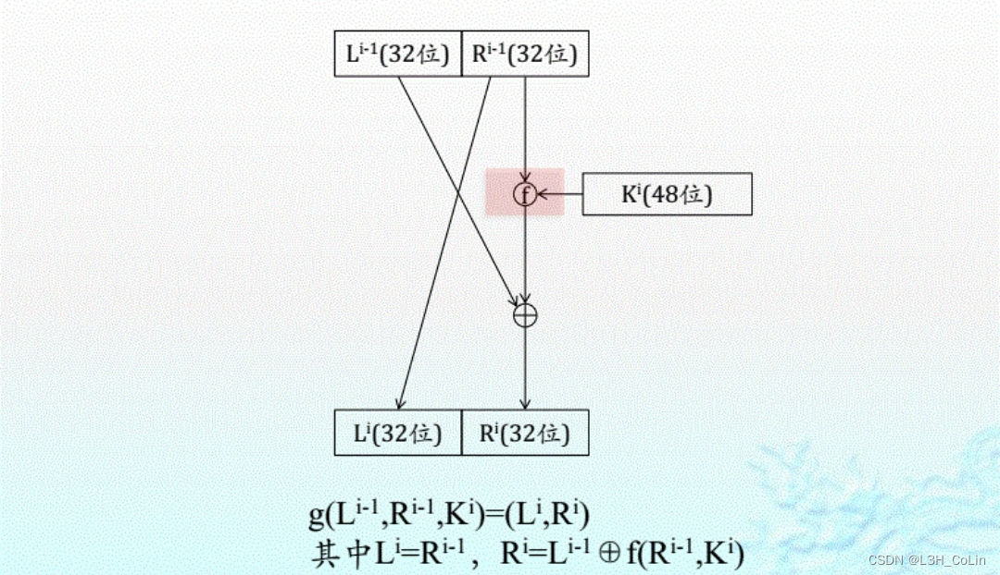
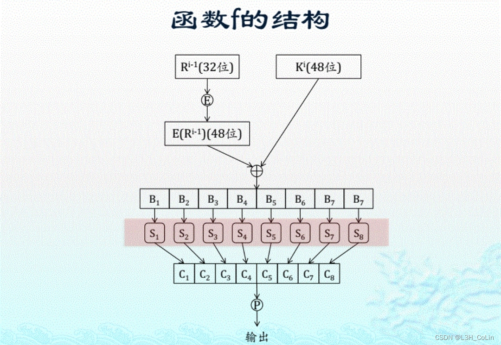
E为扩展置换：
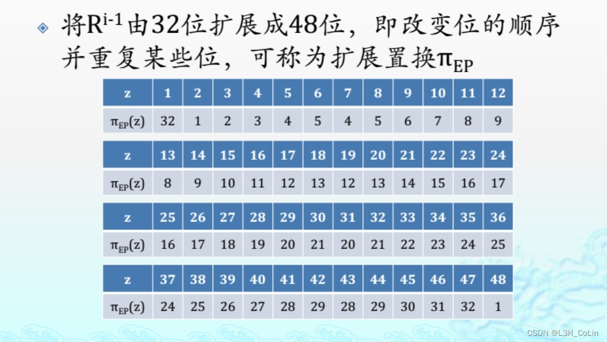
S盒的代换方法：
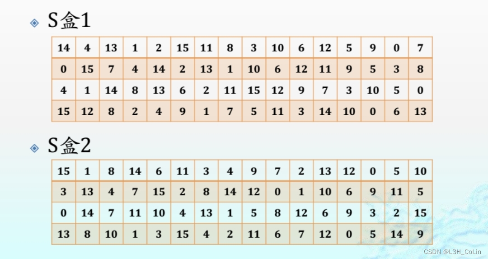
每一组是6比特代换，里面最左边的一位和最右边的一位决定在哪一行代换，中间4位决定代换的值。如最左边为1，最右边为1，就应该在第4行找。S盒一共8个。
P为最终置换：
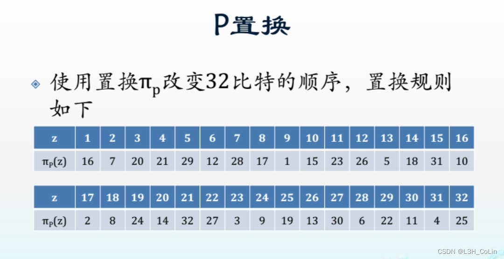
DES算法的安全性
所有的S盒都是固定的
IBM提交算法后，发现反馈的结果修改了所有的S盒
S盒的设计准则并未完全公开
怀疑算法存在“陷门”
S盒的设计准则
- 每一行是整数0，…，15的一个置换
- 没有一个S盒是输入变量的线性函数
- 改变S盒的一个输入位至少要引起两位输出改变
- 对于任何一个S盒和任意一个输入X，S(X)和S(X 001100)至少有两个比特不同
- 对于任何一个S盒，对于任何一个输入对e，f属于{0,1}4，S(X)≠S(X 11ef00)
- S盒的任意一位不变，其他5位变化时，输出中的0和1的总和基本相等
人们担心实际56比特的密钥长度不足以抵御穷举式攻击，密钥量只有越1017个
DES算法基本没有发现其他重大的缺陷，线性攻击和差分攻击对计算复杂度有一定影响
DES存在4个弱密钥：使用弱密钥加密明文得到密文，对密文进行弱密钥加密和解密均可以恢复明文。（）
半弱密钥：存在K和K’，使得，DES存在12个半弱密钥。
如
补密钥：，补密钥将密钥的所有位取反得到。
DES不是幂等的，不能构成封闭群，因此可以通过自身乘积以提高安全性，其中三重DES使用最为广泛，使用不同密钥对其加密三次。
- 中间相遇攻击双重DES：穷举密钥加密P1，保存结果，一共有256个值
- 穷举前解密C1，比较P1加密的结果，若相同使用当前解密的密钥K2和表中对应的K1来加密P2，若得到C2，则说明得到正确的K1和K2，否则继续寻找。总复杂度为257，但空间使用也很大。
三重DES的工作方式：
- DES-EEE3：三个不同密钥三次加密
- DES-EDE3：三个不同密钥加密-解密-加密
- DES-EEE2：两个不同密钥，K1=K3，加密3次
- DES-EDE2：两个不同密钥，K1=K3，加密-解密-加密
AES
-
比三重DES快
-
至少与三重DES一样安全
-
数据分组长度为128比特
-
密钥长度为128/192/256比特
-
可在全世界范围内免费得到
-
采用SPN结构，加密和解密相似
-
能够有效抵抗所有已知攻击
-
没有发现弱密钥和补密钥
-
结构简单，运算速度快
-
支持128位分组，支持128/192/256位密钥
-
轮数Nr依赖密钥长度，分别为10/12/14
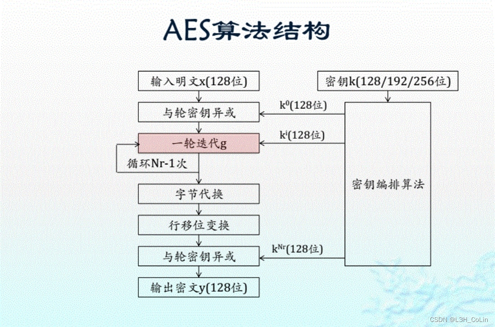
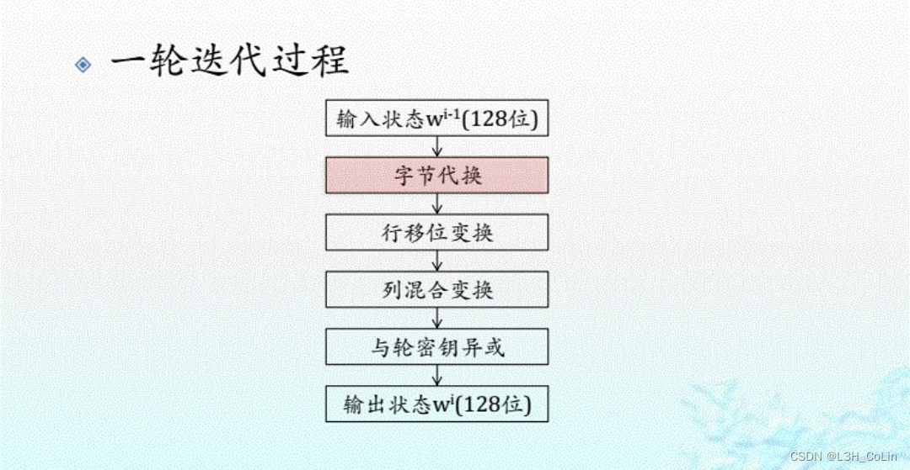
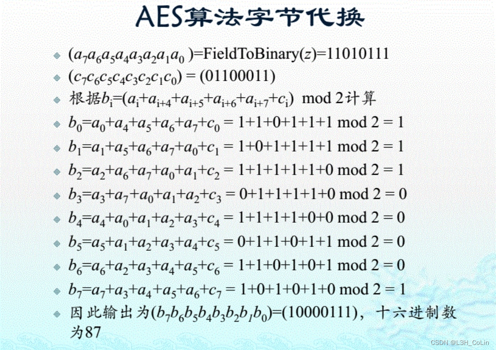
字节代换
AES的S盒代换是基于有限域
字节代换：
计算z=f(x)在有限域下的乘法逆元z-1，使用辗转相除法计算。
行移位变换
对状态矩阵每一行进行循环左移操作，第i行循环左移i-1个字节。（明文看做4*4字节的矩阵）
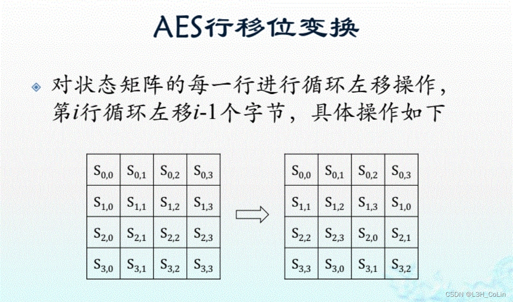
列混合变换
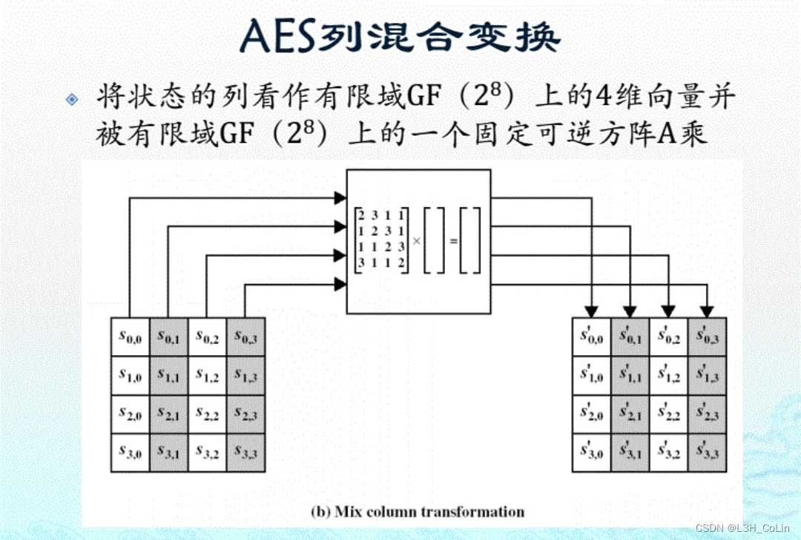
也就是和一个固定的矩阵相乘。
与轮密钥异或
与KNr异或即可。
AES密钥编排算法
若密钥长度为128字节，一共迭代10轮，需要11个轮密钥，每一个轮密钥为128位，密钥编排算法需要用128位主密钥key生成11个128位的轮密钥。
将4*4密钥矩阵中的每一列当做一个字，易知密钥编排算法需要输出44个字，表示11个轮密钥，AES密钥编排算法使用了S盒变换（与DES不同）
首先定义了10个常数：
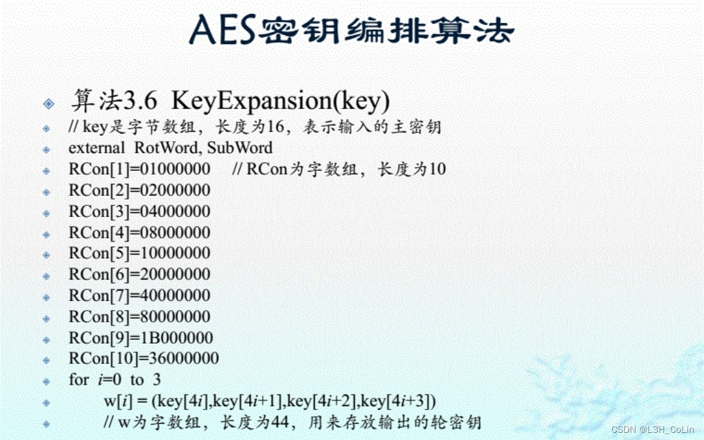
初始密钥有4个字W[0]，W[1]，W[2]，W[3]，为第一次派生得来。之后的字的生成方式为：对于W[i]，由于W[3]=(K12，K13，K14，K15)T，此时i=4，首先将第一字节与第四字节交换(K15，K12，K13，K14)T，然后逐字节进行代换。最后如果i整除4，就与上面的10个常数之一Rcon[i/4]异或（实际上只改了最高字节）。最后再与W[4-4]进行异或。一直计算到W[43]完成。
当列数不同时（密钥长度为192和256比特）时，代换与异或的判断条件有所改变。
SM4加密算法
- 分组长度为128比特，密钥为128比特
- 是对称加密算法，共需要32轮迭代，在解密算法中密钥逆序使用
- 密钥扩展算法采用32轮迭代结构，与加密算法类似
- 基于非均衡Feistel结构
每一轮迭代，产生32位新的比特序列，放在128位的最后面，前面的128位保留后96位放在前面，舍弃最前面的32位，类似于一个内部迭代过程。最后经过反序变换输出密文。
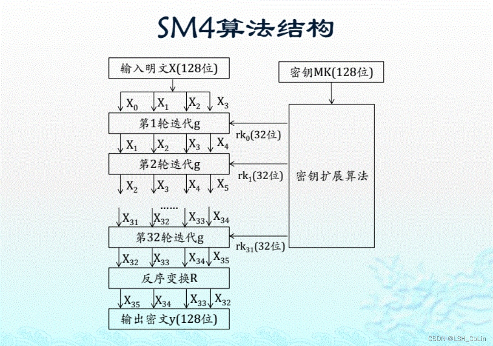
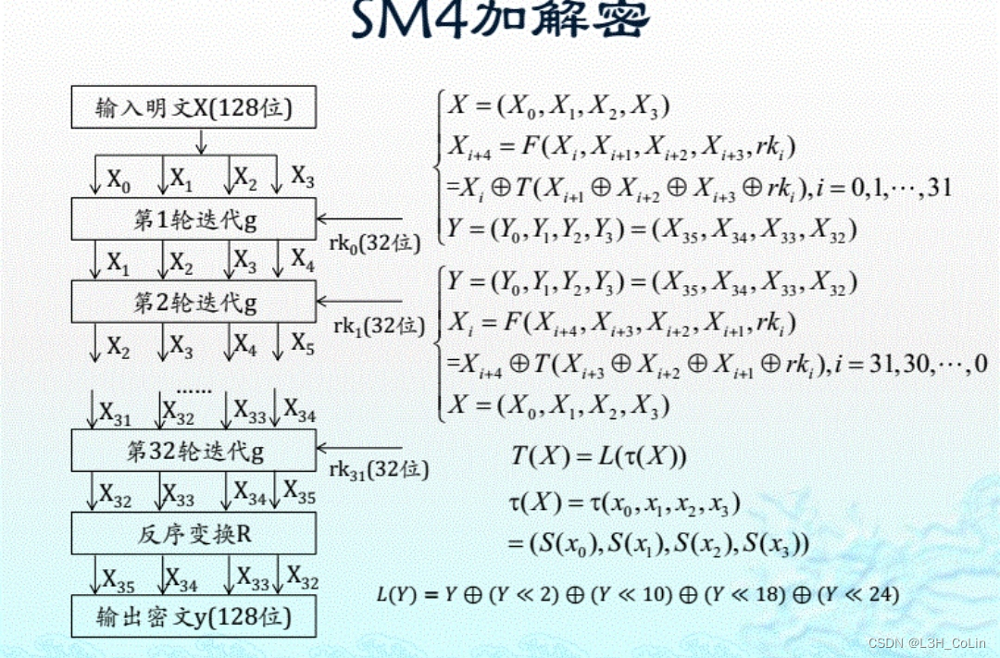
分组密码的工作模式
由基本密码、一些反馈和一些简单运算组合而成
每个密码标准在描述密码算法同时都定义相关工作模式
- 电子密码本 ECB
- 密码分组链接 CBC
- 密码反馈 CFB
- 输出反馈 OFB
- 计数器模式 CTR
电子密码本模式——ECB
使用相同的密钥对每一块进行加密，对每一块加密后将每一块密文组合在一起即得到密文。
分组之间没有任何关系
优点：
- 可以进行并行处理
- 简单有效
- 不存在错误传播问题。（加密产生的错误只会限制在一块之中）
缺点：
- 相同明文分组会加密成相同密文分组
- 对明文的主动攻击是可能的：可能会替换、重排、删除、重放信息块而改变原有明文的意义
- 适合传输短信息（如加密口令）
密码分组链接模式——CBC
前一块明文的加密结果参与下一块的密文生成流程，看上去像是有链接关系。
分块之间相互影响：
- 信息块不容易被替换、重排、删除、重放
- 安全性好于ECB
- 适合传输长度大于64位的报文
- 是大多数系统的标准模式（SSL、IPSec等）
不足：
- 没有已知的并行算法
- 需要共同初始化向量IV
- 存在错误传播现象，前面出错后面就全错了
密码反馈模式——CFB
将分组密码用于异步序列密码，数据可以在比分组小得多的单元里进行加密。
适用于实时加密字节级别的数据的情况
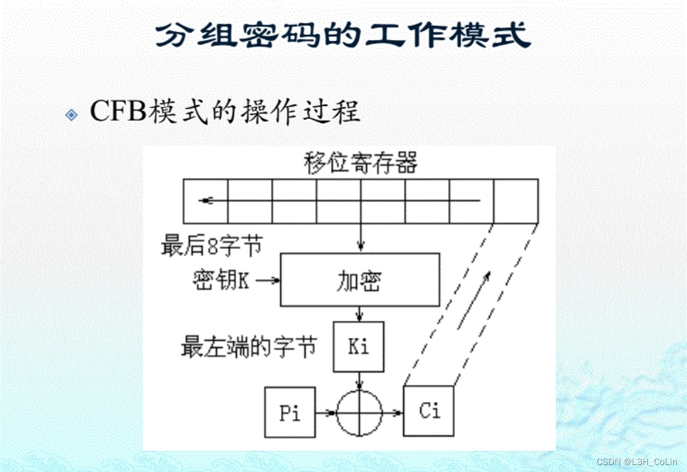
特点：
- 没有已知的并行实现算法
- 隐藏的明文模式
- 需要共同的移位寄存器初始值IV
- 存在错误传播（一个单元损坏影响多个单元）
输出反馈模式——OFB
将分组密码算法用于同步序列密码的方式
与CFB类似，不同的是进入移位寄存器的数据和被加密明文无关，只与初始向量无关。
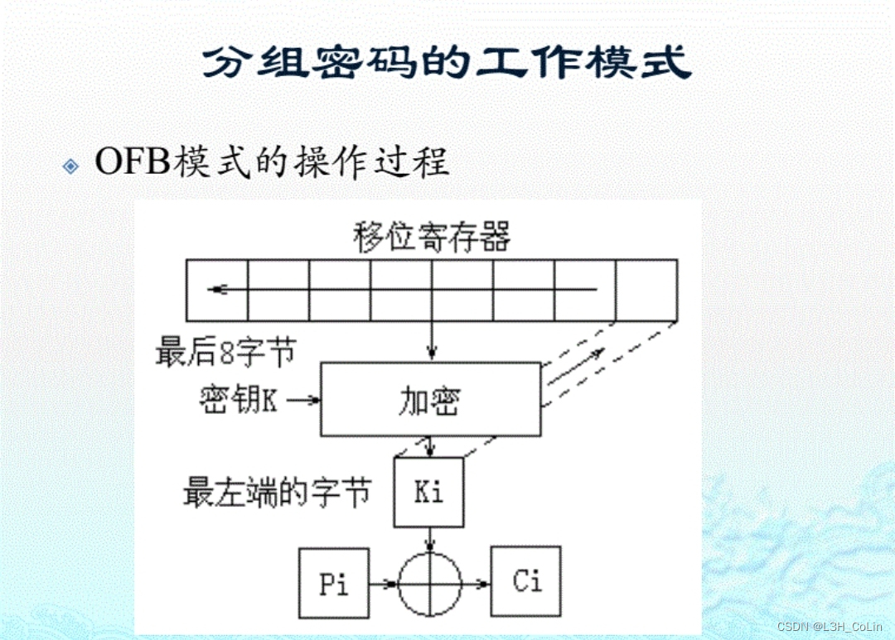
特点：
- 没有已知的并行实现算法
- 需要共同的移位寄存器初始值IV
- 不存在错误传播
- 可以离线工作（离线生成密钥流，在线直接进行加密工作即可，相当于预处理过程）
- 密钥序列最终会重复
计数器模式——CTR
引入一个计数器，使用密钥加密计数器的值，然后与明文异或。下一次加密将计数器加一相同操作。
- 可以进行并行加密
- 可以离线工作（预处理）
- 吞吐量仅受可使用并行数量的限制
- 加密数据块的随机访问
- 可证明安全
- 简单性（只要求实现加密算法）
- 密钥只能使用一次，除非能维持很长的计数器
短块处理
通用方法：填充（padding）（当明文长度为分组长度的整数倍时，仍然需要添加一整个填充块）
-
pkcs#5/pkcs#7：最大分组长度为不小于8/256字节，缺失几个字节填充几遍填充字节数量
-
PKCS7填充法：FF FF FF FF FF FF FF FF FF 07 07 07 07 07 07 07
-
X923填充法：FF FF FF FF FF FF FF FF FF 00 00 00 00 00 00 07
-
ISO 10126填充：FF FF FF FF FF FF FF FF FF 7D 2A 75 EF F8 EF 07
-
一种特殊方法
-
自主指定，None，Zeros
-
避免使用padding造成数据长度的扩充CTS（CipherText Stealing，密文挪用）
-
工作模式安全性依赖于算法本身的安全性
-
常用工作模式的比较：分组密码算法的作用、随机数的不可预测性、计数器的新鲜性、并行性、错误传播
-
短块处理：填充、密文挪用